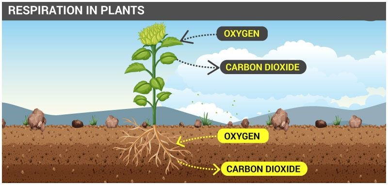
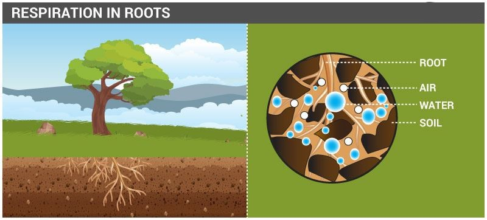

Respiration In Plants
“Respiration is defined as a metabolic process wherein, the living cells of an organism obtains energy (in the form of ATP) by taking in oxygen and liberating carbon dioxide from the oxidation of complex organic substances.”
Do Plants Breathe?
Yes, like animals and humans, plants also breathe. Plants do require oxygen to respire, the process in return gives out carbon dioxide. Unlike humans and animals, plants do not possess any specialized structures for exchange of gases, however, they do possess stomata (found in leaves) and lenticels (found in stems) actively involved in the gaseous exchange. Leaves, stems and plant roots respire at a low pace compared to humans and animals. Breathing is different from respiration. Both animals and humans breathe, which is a step involved in respiration. Plants take part in respiration all through their life as the plant cell needs the energy to survive, however, plants breathe differently, through a process known as Cellular respiration. In this process of cellular respiration, plants generate glucose molecules through photosynthesis by capturing energy from sunlight and converting it into glucose. Several live experiments demonstrate the breathing of plants. All plants respire to provide energy for their cells to be active or alive. Let us take a look at the respiratory process in plants.
The Process of Respiration in Plants
During respiration, in different plant parts, significantly less exchange of gas takes place. Hence, each part nourishes and fulfils its own energy requirements. Consequently, leaves, stems and roots of plants separately exchange gases. Leaves possess stomata – tiny pores, for gaseous exchange. The oxygen consumed via stomata is used up by cells in the leaves to disintegrate glucose into water and carbon dioxide.

Respiration In Roots
Roots, the underground part of the plants, absorbs air from the air gaps/spaces found between the soil particles. Hence, absorbed oxygen through roots is utilized to liberate the energy that in the future, is used to transport salts and minerals from the soil. We know that plants possess a specific ability to synthesize their own food through photosynthesis. Photosynthesis takes place in only those parts of the plants which have chlorophyll, the green plant parts. Photosynthesis is so evident that at times it seems to mask the respiratory process in plants. Respiration must not be mistaken for photosynthesis. Respiration occurs all through the day, but the photosynthesis process occurs in the daytime, in the presence of sunlight only. Consequently, respiration becomes evident at night time in plants. This is the reason we often hear people warn against sleeping under a tree during nighttime, as it may lead to suffocation due to excess amounts of carbon dioxide liberated by trees following respiration.

Respiration In Stems
The air in case of stem diffuses into the stomata and moves through different parts of the cell to respire. During this stage, the carbon dioxide liberated is also diffused through the stomata. Lenticels are known to perform gaseous exchange in woody or higher plants.
Respiration In Leaves
Leaves consist of tiny pores known as stomata. Gaseous exchange occurs through diffusion via stomata. Guard cells regulate each of the stomata. Exchange of gases occurs with the closing and opening of the stoma between the inferior of leaves and the atmosphere.
Aerobic Respiration
This type of respiration takes place in the mitochondria of all eukaryotic entities. Food molecules are completely oxidised into the carbon dioxide, water, and energy is released in the presence of oxygen. This type of respiration is observed in all the higher organisms and necessitates atmospheric oxygen.
Anaerobic Respiration
This type of respiration occurs within the cytoplasm of prokaryotic entities such as yeast and bacteria. Here, lesser energy is liberated as a result of incomplete oxidation of food in the absence of oxygen. Ethyl alcohol and carbon dioxide are produced during anaerobic respiration.
The End